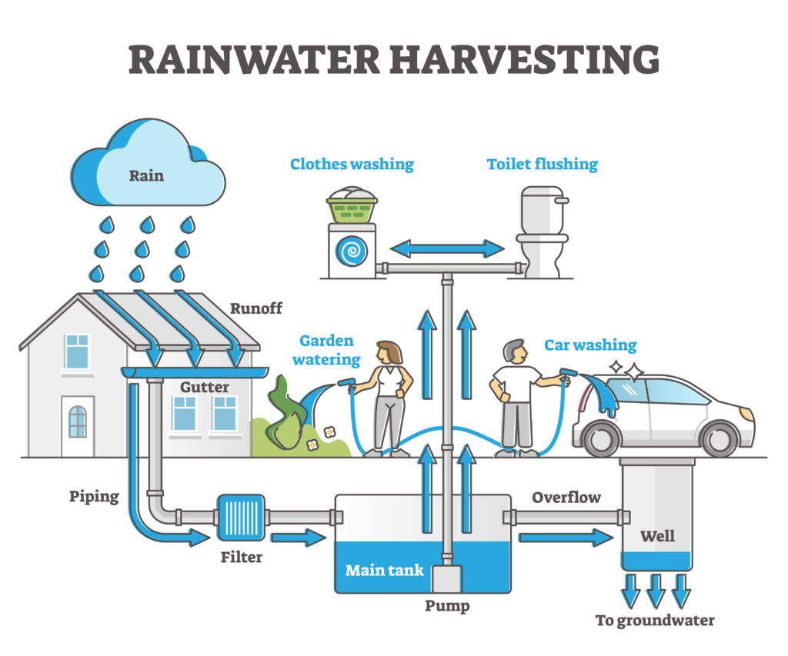
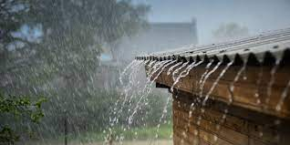

Rooftop:

Rooftop rainwater harvesting is the process of collecting and storing rainwater from the roofs of buildings for later use. The water is channeled through gutters and downspouts into storage containers, such as tanks or cisterns. This method provides a reliable source of water for domestic, agricultural, or even industrial use, particularly in areas where freshwater resources are scarce. The harvested rainwater can be used for drinking, irrigation, cleaning, or other non-potable purposes. It helps reduce dependency on municipal water systems and can alleviate pressure on groundwater reserves. Proper filtration and maintenance are required to ensure the water is safe for consumption. Rooftop rainwater harvesting is an eco-friendly and sustainable way to manage water resources.
Here's a more detailed explanation:
How it works:
Collection: Rainwater is collected from the roof surface using gutters and downpipes.
Conveyance: The collected water is then channeled through pipes or other systems to storage tanks or cisterns.
Storage: The stored rainwater can be used for various purposes, including irrigation, domestic use (with proper treatment), and groundwater recharge.
Benefits:
Water Conservation: Reduces reliance on conventional water sources and helps conserve groundwater and surface water resources.
Cost-Effective: Can be a cost-effective way to supplement water supplies, especially in areas with water scarcity.
Environmental: Helps reduce erosion, storm water runoff, and flooding.
Reduced Water Pollution: Harvested rainwater is often cleaner than municipal water, as it is free from pollutants and toxins.

Typical Uses:
Irrigation: Watering gardens, crops, and landscapes.
Domestic Use: For washing, cleaning, and even potentially for drinking water after proper treatment.
Groundwater Recharge: Can be used to recharge groundwater aquifers by diverting rainwater to recharge structures like pits, trenches, or wells.
System Components:
Roof Catchment: The roof surface serves as the collection area.
Gutters and Downpipes: These are used to channel rainwater from the roof to the storage tanks.
Storage Tanks/Cisterns: These are used to store the collected rainwater.
Filters: Filters can be used to remove debris and impurities from the collected rainwater.
Pumps (Optional): Pumps can be used to draw water from the storage tanks for use.
Considerations:
Water Quality: The quality of the collected rainwater can be affected by the type of roofing material and the presence of pollutants on the roof.
Storage Capacity: The size of the storage tanks should be sufficient to store enough water for the intended use.
Maintenance: Regular maintenance of the rainwater harvesting system is necessary to ensure its proper functioning.